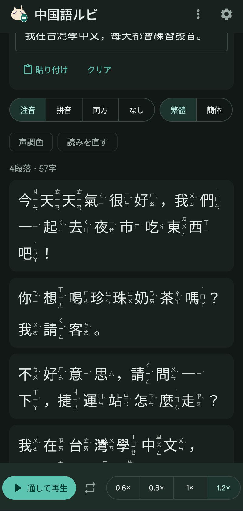
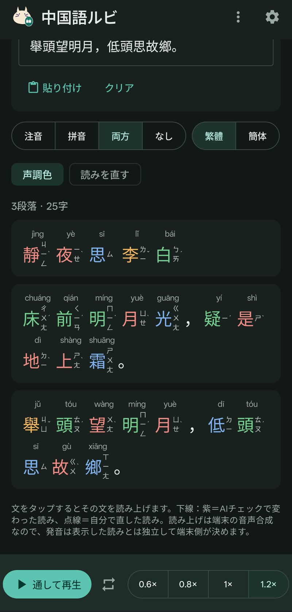
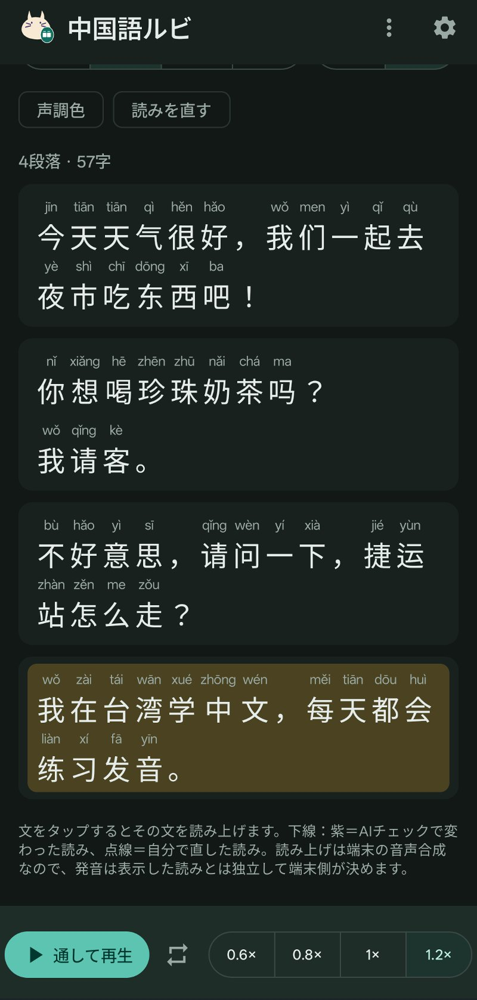
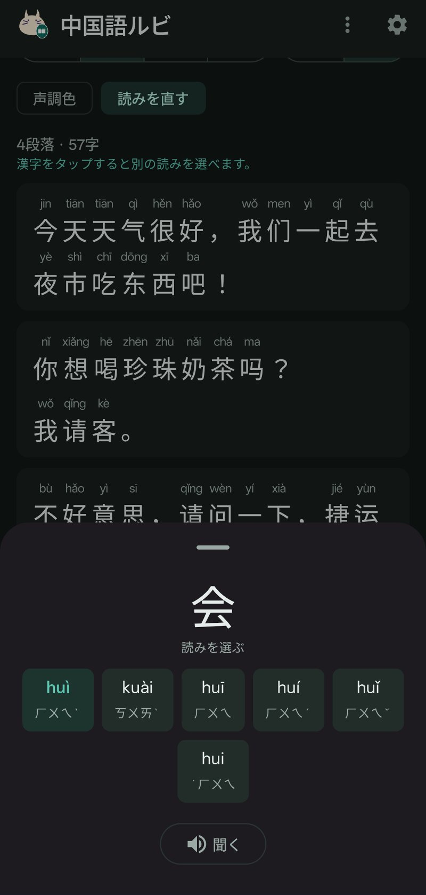
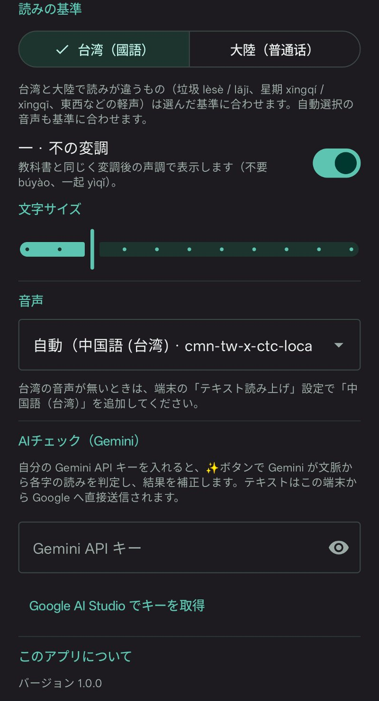

貼り付けるだけで、注音・ピンイン。
教科書、ニュース、SNSの投稿、歌詞。読みたい中国語を貼り付けるだけで、すべての漢字に注音とピンインが付きます。 オフラインでもオンラインでも使え、そのまま読み上げも。

サンプルは自作の会話文と、李白の「靜夜思」です。




読むための発音記号を、必要な形で。
台湾の教科書と同じく漢字の右に縦書きの注音、漢字の上にピンイン。両方の同時表示や、表記なしにも切り替えられます。
アプリ内の辞書だけで読みを振り、通信は一切しません。多音字は語単位で判定します(銀行 yínháng、重新 chóngxīn など)。
オンラインにすると pinyin-pro で多音字を文脈から判定します。処理は端末の中で行い、テキストは送信しません。
垃圾・星期のように読みが異なる語は選んだ基準に従います。台湾式では東西のような語も本来の声調で表示します。
漢字を声調ごとに色分け。一・不の変調も教科書どおりに表示します。繁体字・簡体字の表示も切り替えられます。
文をタップするとその文を読み上げ。通して再生、1文リピート、速度の切り替えもできます。
多音字は漢字をタップして読みを選び直せます。ご自身のGemini APIキーを入れれば、AIで読みを確認することも(任意)。
他のアプリから共有したテキストや、選択したテキストをそのまま開けます。拼音付き・注音付きでコピーや共有も。
※読みは辞書や pinyin-pro による自動判定で、常に正しいことを保証するものではありません。読み上げは端末の音声合成を使うため、発音は表示した読みとは独立して端末側が決めます。
機能はすべて無料。Proは広告を消す買い切りで、定期購入ではありません。
入力したテキストは、あなたの端末の中で処理されます。
中国語ルビ(Chinese Ruby)は、中国語のテキストを貼り付けるだけで、すべての漢字に注音(ボポモフォ)とピンインを振って表示するAndroidアプリです。台湾の教科書と同じ縦書きの注音、漢字の上のピンイン、両方の同時表示を切り替えられます。
使えます。オフラインではアプリ内の辞書だけで読みを振り、通信は一切しません。オンラインにすると pinyin-pro で多音字を文脈から判定します。ご自身のGemini APIキーを入れれば、AIで読みを確認することもできます(任意)。
どちらも選べます。垃圾や星期のように読みが異なる語は選んだ基準に従い、台湾式では東西のような語の軽声を本来の声調で表示します。一・不の変調も教科書どおりに表示します。
Google Playで近日公開予定です。機能はすべて無料で使え、無料版には画面上部に小さな広告が表示されます。買い切りのPro(定期購入ではありません)で広告が消えます。